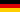
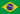

| Ronda | Fecha | Gran Premio | Mapa del Circuito | Resultados |
|---|---|---|---|---|
| 1 | 6 de marzo |
Gran Premio de Australia Circuito de Albert Park Ganador 2004: |
 |
Libres 1: Libres 2: Libres 3:  Michael Schumacher Libres 4: Pole position: Ganador: 2.º puesto:  Rubens Barrichello 3.º puesto: Vuelta rápida: |
| Ronda | Fecha | Gran Premio | Mapa del Circuito | Resultados |
|---|---|---|---|---|
| 2 | 20 de marzo |
Gran Premio de Malasia Circuito Internacional de Sepang Ganador 2004: |
 |
Libres 1: Ricardo Zonta Libres 2: Felipe Massa Libres 3: Libres 4: Pole position: Ganador: 2.º puesto: 3.º puesto: Nick Heidfeld Vuelta rápida: |
| Ronda | Fecha | Gran Premio | Mapa del Circuito | Resultados |
|---|---|---|---|---|
| 3 | 3 de abril |
Gran Premio de Baréin Circuito Internacional de Baréin Ganador 2004: |
Libres 1: Ricardo Zonta Libres 2: Alexander Wurz Libres 3: Michael Schumacher Libres 4: Mark Webber Pole position: Ganador: 2.º puesto: 3.º puesto: Vuelta rápida: |
| Ronda | Fecha | Gran Premio | Mapa del Circuito | Resultados |
|---|---|---|---|---|
| 4 | 24 de abril |
Gran Premio de San Marino Autodromo Enzo e Dino Ferrari Ganador 2004: |
Libres 1: Libres 2: Libres 3: Michael Schumacher Libres 4: Pole position: Ganador: 2.º puesto: Michael Schumacher 3.º puesto: Alexander Wurz Vuelta rápida: Michael Schumacher (1:21.858) |
.png) Vitantonio Liuzzi
Vitantonio Liuzzi Pedro de la Rosa
Pedro de la Rosa Kimi Räikkönen
Kimi Räikkönen.svg.webp) Jenson Button
Jenson Button